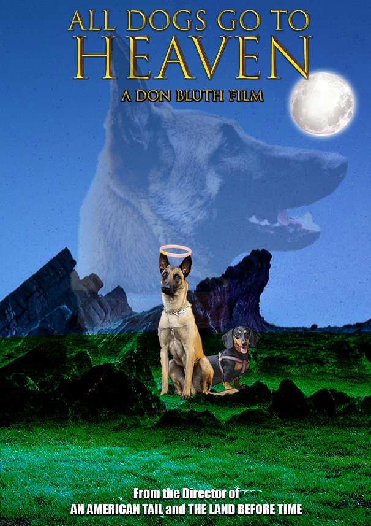
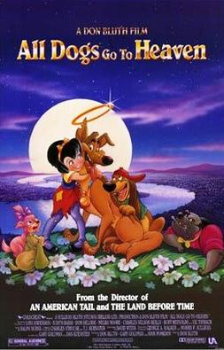
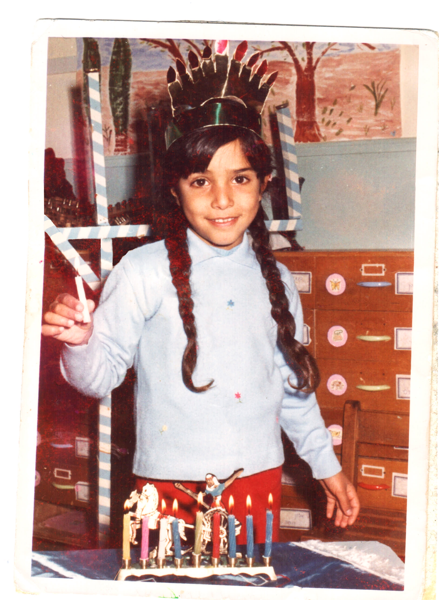
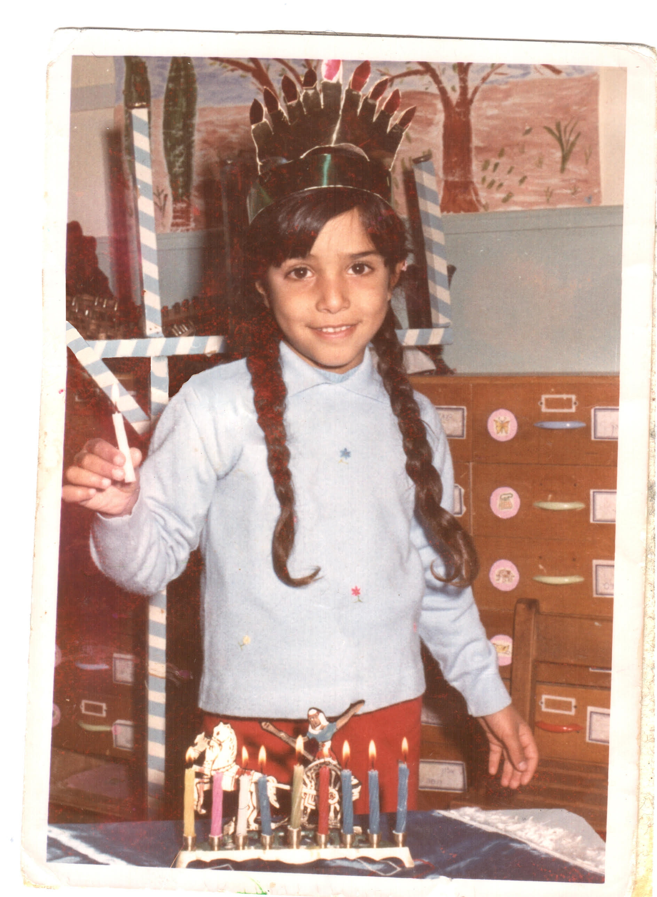
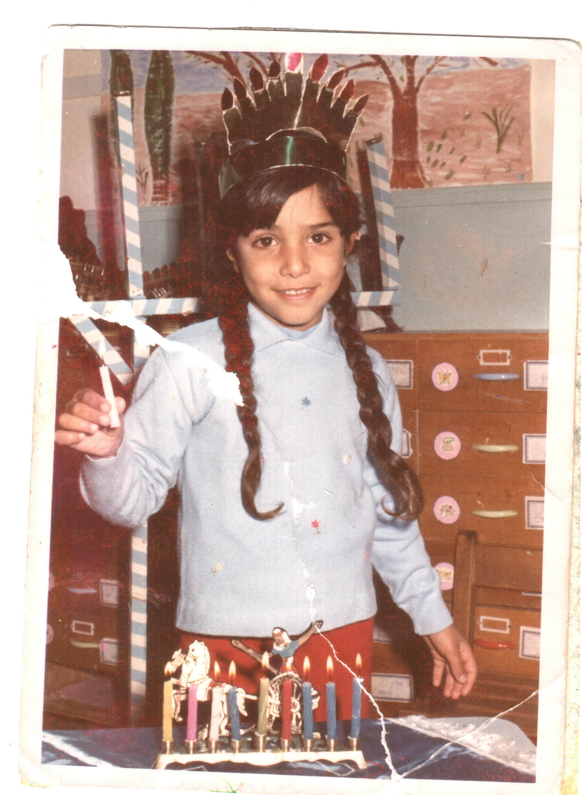

גרפיקה
במסגרת קורס זה, אנו לומדים גרפיקה ושימוש בתוכנות עריכה שונות כגון Photoshop ו - Illustrator של Adobe. בעמוד זה תוכלו למצוא דוגמאות לעבודות שונות שבוצעו במהלך הקורס.
50 שנה ל - HIT

לרגל 50 שנה ל-HIT קיבלנו משימה להכיו ולעצב פוסטר לכבוד המכון בעזרת Adobe Illustrator ו- Photoshop
גן עדן לכלבים
במטלה זו נדרשנו למצוא סרט אהוב להכין לו פוסטר חדש בעזרת Adobe Photoshop
 Retouch
במטלה זו התבקשנו למצוא בבית תמונה ישנה, לסרוק אותה למחשב ולתקן בה קמטים/קרעים או כל נזק שהוא בעזרת Adobe Photoshop.
  